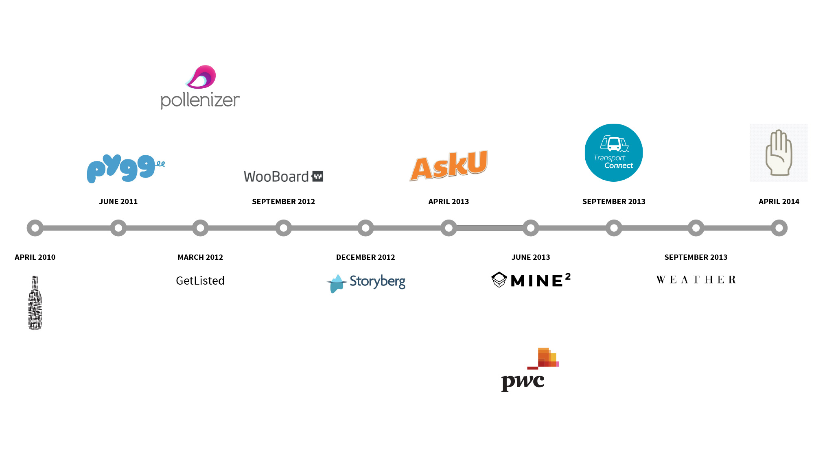
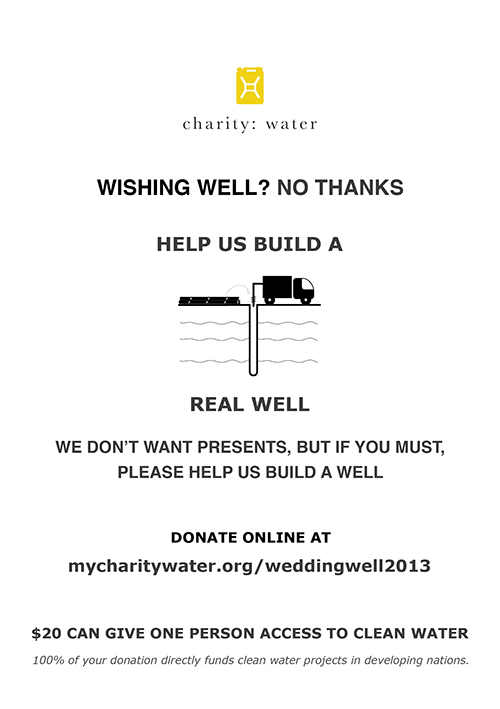
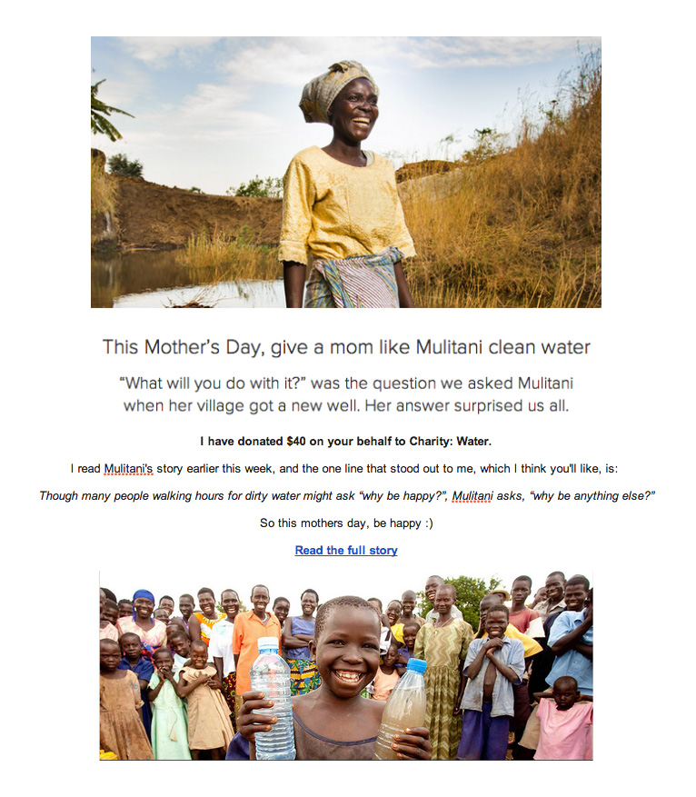
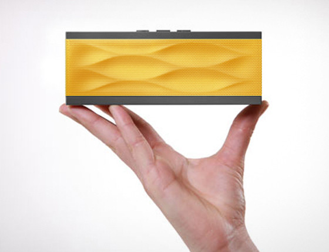

Hi, I'm Michael Dijkstra.
I want to use my broad range of skills and experience to help change the world with charity: water.

I currently work as Head of Product for PwC Australia’s Create Digital practice where I oversee product development for various businesses, including AskU, a free way to support charity in under 30 seconds a day.
Before PwC I founded my own startup, Storyberg, worked on a number of different startups as a Lean Product Manager for Pollenizer and started Ninety9Bottles, an online wine company and wine label.

As a founder and Product Manager I’ve learnt how to run agile teams using Lean Startup Methodology, focus, set priorities, be self-motivated and launch products.

As a developer I’ve learnt how to build web and mobile apps, test drive my development, embrace new technologies and ship features, fast.
You can see how I work and what I've built.
I believe in charity: water
After discovering charity: water through Kevin Rose’s interview of Scott Harrison on Foundation, I donated my birthday and raised $104.

Last year when I got married, instead of having a wishing well we decided to build a real well instead, and raised $7,115.

After reading Mulitani's story I donated $40 instead of buying my mum flowers, although because I didn’t organise it until Mothers Day I had to create my own email card (this is the best I could do with Gmail).

If I could, I would have purchased a charity: water Jambox, but they won’t ship to Australia :(
I'm ready to change the world
I’ve worked for a number of startups claiming to change the world, but working for charity: water would be my first opportunity to really change the world.
I know charity: water will have its challenges, but they’re challenges I’m ready to take on. I also know working remotely from Sydney would be challenging, but if there’s a fit, I’d be willing to move to New York.
If you want to find out more about me and what I’ve done, you can follow me on Twitter, browse my LinkedIn or get in touch.